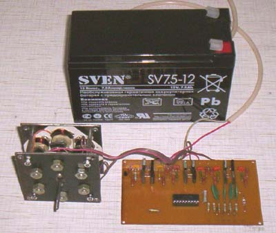
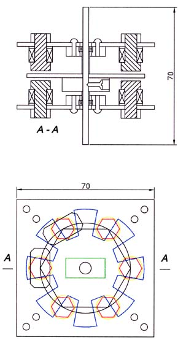
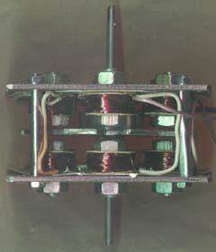
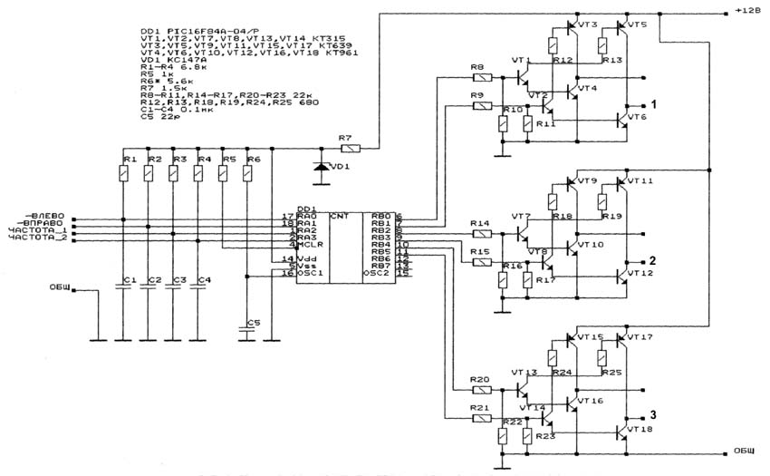
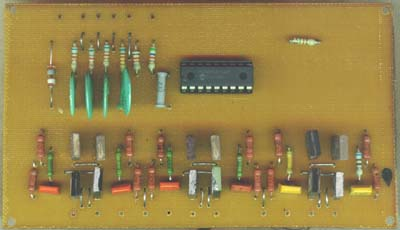
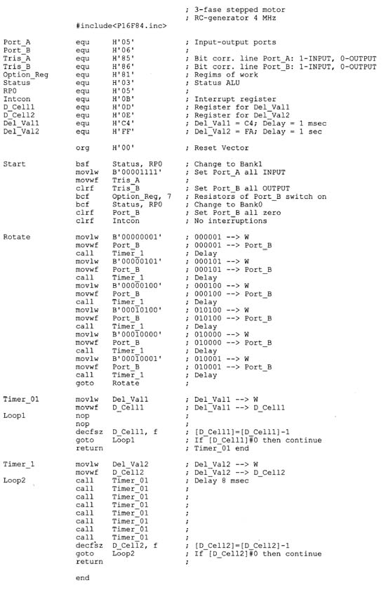

Трехфазный шаговый двигатель с плоским зубчатым ротором (угол шага 11.25 градуса)

Характеристики:
Конструкция двигателя
Чертежи шагового двигателя: файл St_Drv02.rar (~40 Кбайт), формат AutoCAD R14, упакован WinRAR 2.80.
Сборочный чертеж шагового двигателя (ШД) показан на рис. 1, а внешний вид - на рис. 2.

Рис. 1. Сборочный чертеж ШД.

Рис. 2. Шаговый двигатель (вид сбоку).
Статор двигателя состоит из двух стальных оснований, стянутых шпильками. По центру оснований установлены шариковые подшипники, в которые вставляется вал ротора. Плоский зубчатый ротор (8 зубцов) крепится на валу с помощью втулки. На каждом основании расположены шесть катушек со стальными сердечниками. Катушки соединены последовательно-параллельно. Расчет катушек выполнен с помощью программы Coil [1]. Двигатель предназначен для работы в трехфазном режиме. В зависимости от характера трехфазной последовательности импульсов может быть выполнен режим шага или полушага.
Система управления
Для опробования ШД и измерения его характеристик была использована система управления (СУ), генерирующая трехфазную последовательность импульсов с заданными параметрами в соответствии со входными сигналами (запуск, остановка двигателя, изменение направления и скорости вращения). Электрическая принципиальная схема СУ приведена на рис. 3, а внешний вид печатной платы - на рис. 4.

Рис. 3. Схема электрическая принципиальная СУ ШД.
Система управления собрана на PIC-контроллере PIC16F84A (DD1) [6]. Рабочая частота определяется цепью R6C5 и составляет около 4 МГц. На выходах RB0 - RB5 формируется трехфазная последовательность импульсов, управляющая инверторами VT3 - VT6, VT9 - VT12, VT15 - VT18, к выходам 1, 2, 3 которых подключены соответствующие группы обмоток, соединенные звездой (точка соединения обмоток подключена к общему проводу). На входы RA0 - RA3 подаются сигналы, определяющие направление и скорость вращения. Логика и режим работы двигателя зависят от программы, записанной в контроллер. На рис. 5 приведен пример простой программы (вращение в одну сторону с довольно низкой скоростью в полушаговом режиме), которая может использоваться для проверки двигателя, а также в качестве исходной для построения более сложных программ (при программировании контроллера [5] необходимо отключить сторожевой таймер). Цепочка R7VD1 обеспечивает напряжение питания контроллера (DD1) +4.7 В, защиту от неправильного подключения источника питания, а также позволяет использовать форсированный режим работы двигателя (кратковременное повышение напряжения питания до 24 вольт) и входные сигналы с TTL-уровнями.

Рис. 4. Внешний вид печатной платы СУ ШД (размер платы 125 х 70 мм2).

Рис. 5. Листинг простой пробной программы для проверки двигателя. Скорость вращения можно увеличить, уменьшив число вызовов подпрограммы Timer_01 из подпрограммы Timer_1. При программировании контроллера необходимо отключить сторожевой таймер.
Измерение частоты вращения осуществлялось с помощью датчика частоты вращения [3], вал которого был соединен с валом двигателя.
Шаговый двигатель имеет простую конструкцию и может использоваться в приложениях, не требующих большой скорости вращения, малых углов шага и высокого момента на валу. Дополнительным свойством двигателя является возможность свободного вращения ротора в отключенном состоянии.
Ссылки:
03.12.2005
16.06.2010
Альтернативные источники
энергии
Компьютеры и
Интернет
Магнитные поля
Механотронные системы
Перспективные
разработки
Электроника и
технология